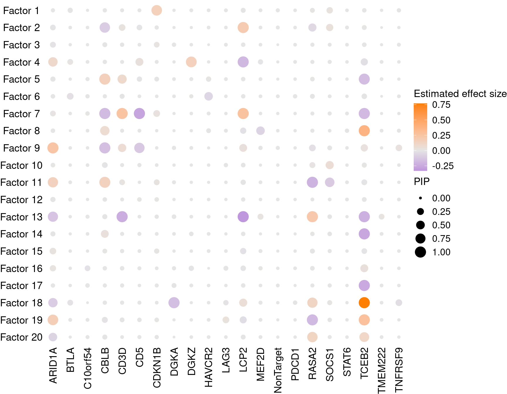
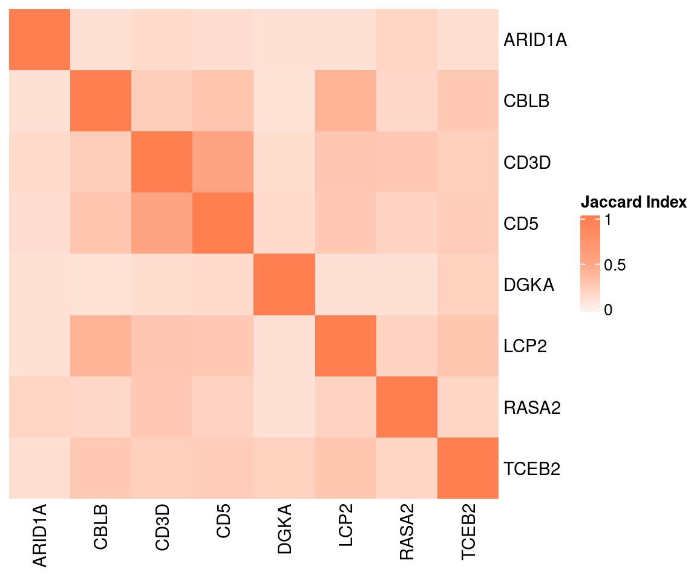
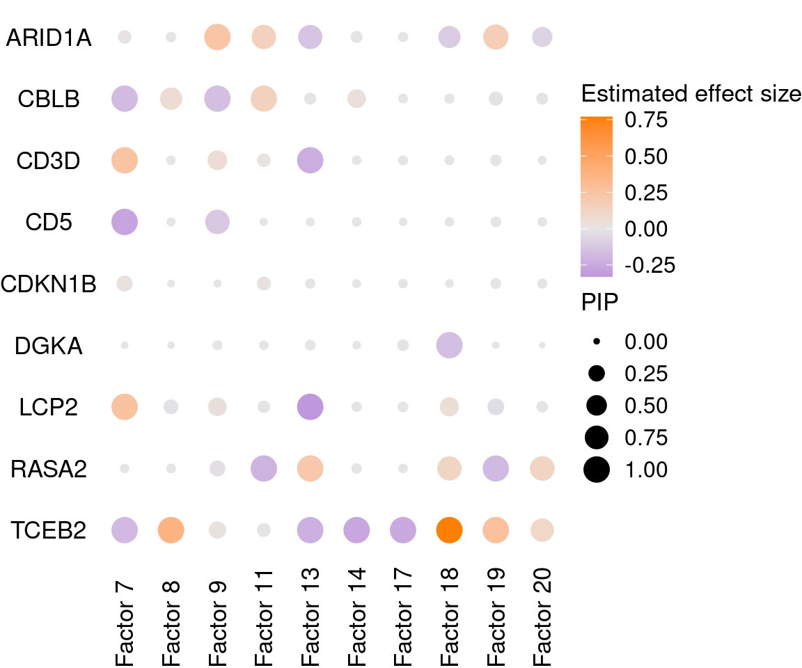
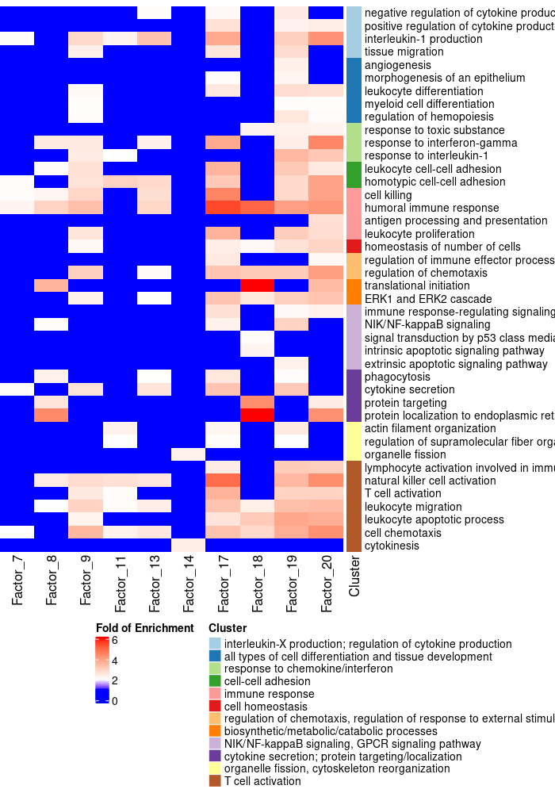

Functional Analysis on Stimulated T Cell CROP-seq GSFA Results
– 2 donors pooled, batch effect and 3 other covariates corrected
Yifan Zhou (zhouyf@uchicago.edu)
2021-03-31
1 GSFA on LUHMES CROP-seq Data
1.1 Data Processing
Cells:
LUHMES cells from 3 batches were merged together into 1 analysis. All cells have only a single type of gRNA readout. Quality control resulted in 8708 cells.
Genes:
Only genes detected in > 10% of cells were kept, resulted in 6213 genes.
Normalization:
Seurat “LogNormalize”: log(count per 10K + 1).
Batch effect, unique UMI count, library size, and mitochondria percentage were all corrected for. The corrected and scaled expression data were used as input for subsequent factor analysis.
1.2 GSFA Results (SVD Initialization)
Here, our “guide”, \(G\) matrix, consists of 15 types (14 genes + NTC) of gene-level knock-down conditions across cells.
Gibbs sampling was initiated from SVD, and conducted for 2000 iterations; the posterior mean estimates were averaged over the last 500 iterations.
1.2.1 Estimate of Factor ~ Perturbation Associations (\(\beta\))

Examples of factor ~ perturbation associations:
1.2.2 DEGs (LFSR < 0.05) under Each Perturbation
| KO | ARID1A | BTLA | C10orf54 | CBLB | CD3D |
| Num_genes | 499 | 0 | 0 | 2484 | 1238 |
| KO | CD5 | CDKN1B | DGKA | DGKZ | HAVCR2 |
| Num_genes | 1264 | 0 | 461 | 0 | 0 |
| KO | LAG3 | LCP2 | MEF2D | NonTarget | PDCD1 |
| Num_genes | 0 | 3194 | 0 | 0 | 0 |
Overlap of DEGs between perturbations:

2 Gene Set Enrichment Analysis
2.1 Enrichment by factor
Target genes: Genes w/ non-zero loadings in each factor (PIP cutoff at 0.95);
Backgroud genes: all 6062 genes included in factor analysis;
Statistical test: hypergeometric test (over-representation test);
Gene sets: GO Slim “Biological Process” (non-redundant);
Only GO gene sets within the size of 10 ~ 500 and have a test FDR \(<\) 0.05 are shown in the webpages.
2.1.1 Terms of Interest


2.1.2 Terms in All Factors of Interest

2.1.3 Terms in Factor 7

7: immune response, interleukin production, response to chemokine, cell killing
2.1.4 Terms in Factor 8

8: cell killing, leukocyte migration
2.1.5 Terms in Factor 9

9: response to chemokine, interleukin production, leukocyte migration, cell killing, T cell activation
2.1.6 Terms in Factor 11

11: cell chemotaxis, interleukin production, leukocyte migration, T cell activation
2.1.7 Terms in Factor 13

13: interleukin production, cell killing, cell chemotaxis, leukocyte migration
2.1.8 Terms in Factor 14

14: meiotic cell cycle, cytokinesis, chromosome segregation, cell cycle G2/M phase transition
2.1.9 Terms in Factor 17

17: cell killing, interleukin production, T cell activation, leukocyte proliferation, cell-cell adhesion, leukocyte migration, adaptive immune response, ……
2.1.10 Terms in Factor 18

18: cell chemotaxis, leukocyte migration, signal transduction by p53 class mediator
2.1.11 Terms in Factor 19

19: interleukin production, leukocyte migration, leukocyte proliferation, cell killing, B cell activation
2.1.12 Terms in Factor 20

20: T cell activation, cell chemotaxis, cell killing, leukocyte migration, leukocyte proliferation